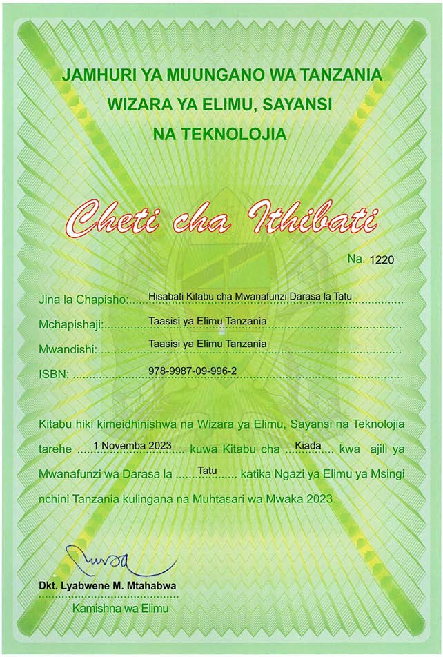

Hisabati
Kitabu cha Mwanafunzi
Darasa la Tatu

JAMHURI YA MUUNGANO WA TANZANIA
WIZARA YA ELIMU, SAYANSI NA TEKNOLOJIA
Cheti cha Ithibati
Na. 1220
Jina la Chapisho: Hisabati Kitabu cha Mwanafunzi Darasa la Tatu
Mchapishaji: Taasisi ya Elimu Tanzania
Mwandishi: Taasisi ya Elimu Tanzania
ISBN: 978-9987-09-996-2
Kitabu hiki kimeidhinishwa na Wizara ya Elimu, Sayansi na Teknolojia tarehe 1 Novemba 2023 kuwa Kitabu cha Kiada kwa ajili ya Wanafunzi wa Darasa la Tatu katika Ngazi ya Elimu ya Msingi nchini Tanzania kulingana na Muhtasari wa Mwaka 2023.
Dkt. Lyabwene M. Mtabhwa
Kamishna wa Elimu
Taasisi ya Elimu Tanzania